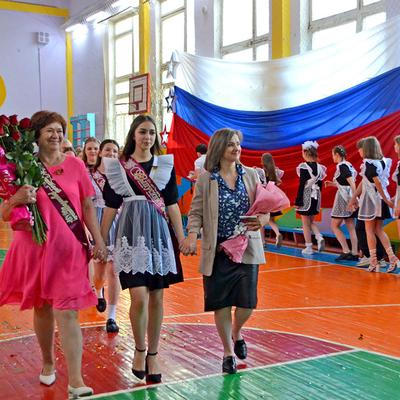
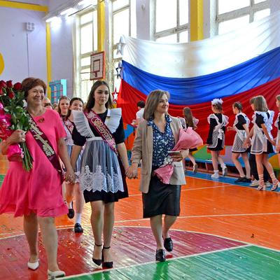

Добро пожаловать!
Мы рады приветствовать вас на официальном сайте нашей школы - учреждения с богатой историей и традициями качества образования.
Основные сведения
Дата создания: 10 ноября 1938 года
Режим работы:
- Понедельник-пятница: 8:00–18:00
- Выходные: суббота, воскресенье
- Обучение в I смену
Структурные подразделения
Школьный спортивный клуб «Лидер»
Руководитель: Вервикишко Олег Николаевич
Должность: учитель физической культуры
Место нахождения: МБОУ специализированная школа №2, Респ.Крым, г.Феодосия, ул.Победы, д.13
Подготовка к экзаменам
Наша школа предлагает комплексную программу подготовки к государственной итоговой аттестации:
- Дополнительные занятия по основным предметам
- Пробные тестирования в условиях, приближенных к реальным экзаменам
- Индивидуальные консультации с преподавателями
- Методические материалы для самостоятельной подготовки
Для учащихся 9-х и 11-х классов проводятся специальные подготовительные курсы по русскому языку, математике и английскому языку.
Контактная информация
Адрес: 298100, Крым, г. Феодосия, ул. Победы, 13
Телефон: 8 (36562) 3-06-13
Email: school_2-feodosiy@crimeaedu.ru
Приёмные дни: вторник, четверг с 14:00 до 17:00
Официальное название
Полное: МБОУ «Специализированная школа № 2 им. Д.И. Ульянова с углублённым изучением английского языка»
Сокращённое: МБОУ Специализированная Школа № 2
Учредитель: Управление образования Администрации г. Феодосии